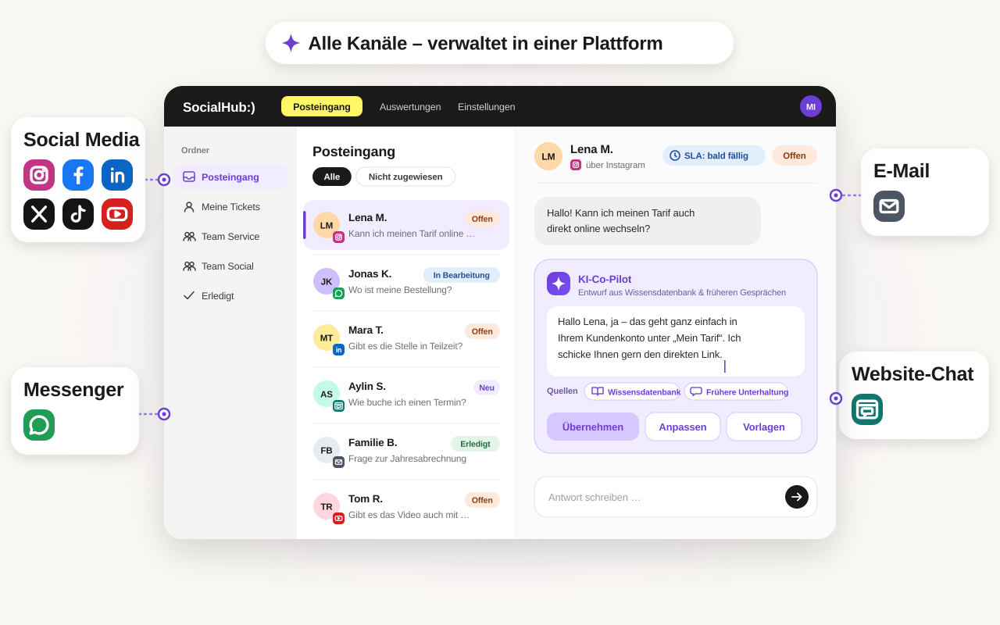
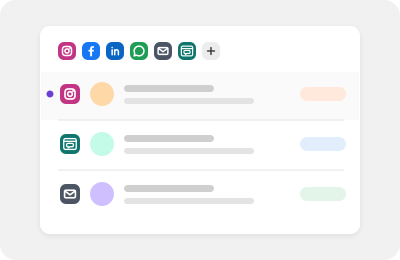
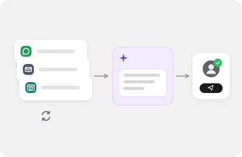
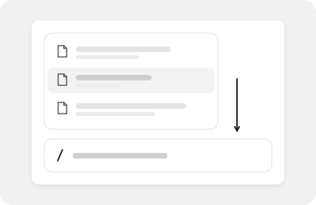
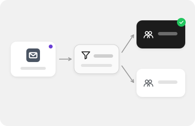
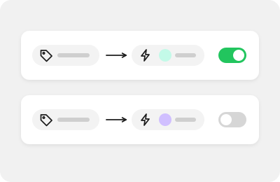
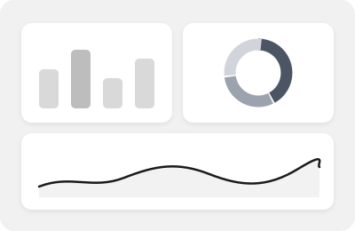

SocialHub CX
Eine Plattform für Customer Experience über alle Kanäle
SocialHub CX ist die Kundenservice-Software von SocialHub für Social Media, WhatsApp, E-Mail und Website-Chat: Kommentare, Direktnachrichten, Erwähnungen, Bewertungen und E-Mails werden zu Tickets in einem gemeinsamen Workspace. Ein KI-Co-Pilot entwirft Antworten aus Ihrer Wissensdatenbank und früheren Gesprächen und zeigt seine Quellen; Routing, Ordner und ein Ziel für die Erstantwort steuern die Bearbeitung. SocialHub ist ein Produkt der maloon GmbH aus Ingolstadt, entwickelt und gehostet in Deutschland.

Funktionen

Gemeinsamer Posteingang
Anfragen aus allen Kanälen gemeinsam bearbeiten, mit Zuweisung und Status.
KI-Co-Pilot
Entwirft Antworten aus Wissensdatenbank und früheren Gesprächen.
KI-Antwortvorschläge
Schlägt passende Antworten vor, Ihr Team prüft und sendet.

KI-Agenten
Unterstützen Ihr Team bei wiederkehrenden Anfragen.
Wissensdatenbank
Ihre eigene Wissensdatenbank anbinden oder unsere nutzen.

Templates & Textbausteine
Wiederkehrende Antworten einheitlich und schnell formulieren.

Intelligentes Routing
Anfragen landen per Regel automatisch beim passenden Team.

Smart Rules
Wiederkehrende Abläufe im Posteingang automatisieren.
SLA
Antwortziele im Blick, bevor etwas liegen bleibt.

Dashboards & Analytics
Eingang, offene Tickets und Antwortzeiten auf einen Blick.
Vertrauen von Organisationen, die SocialHub nutzen
Logos von Organisationen, die die SocialHub-Plattform nutzen – keine Aussage zur Nutzung von SocialHub CX.
Bewertungen und Auszeichnungen für die SocialHub-Plattform
SocialHub auf OMR Reviews: 4,57 von 5 aus 374 Bewertungen, Stand 20.10.2026


Für Ihre Branche
Gebaut für Organisationen mit vielen schriftlichen Anfragen und hohen Anforderungen an Datenschutz.
ÖPNV & Verkehr
Fahrgastanfragen und Störungsspitzen aus Social Media und E-Mail strukturiert abarbeiten.
Handel & Loyalty
Kommentare, Bewertungen und E-Mails zu Bestellungen, Aktionen und Bonusprogrammen bündeln.
Banken & Versicherungen
Digitaler Service mit deutschem Anbieter, nachvollziehbar je Ticket.
Kommunen & Verwaltung
Bürgeranfragen zentral erfassen, zuweisen und einheitlich beantworten.
Stadtwerke & Versorger
Service-Postfächer zu Abschlag, Zählerstand und Umzug automatisch verteilen.
Datenschutz ohne Kleingedrucktes
SocialHub ist ein deutsches Unternehmen, entwickelt und hostet in Deutschland (Serverstandorte Falkenstein und Nürnberg) und ist nach ISO 27001 zertifiziert. Das Hosting erfolgt bei einem Anbieter mit BSI-C5-Testat; SocialHub selbst hat kein eigenes C5-Testat. Einen AV-Vertrag nach Art. 28 DSGVO erhalten Sie auf Anfrage.
SocialHub CX im Vergleich
Belegt, datiert und fair – inklusive der Fälle, in denen ein anderes Tool besser passt.
SocialHub CX vs. Sprinklr
Fokussierter Social- und E-Mail-Service statt Enterprise-Suite.
SocialHub CX vs. Zendesk
Social-Kommentare und E-Mail als Tickets – von einem deutschen Anbieter.
SocialHub CX vs. Intercom
Social Media, E-Mail und Website-Chat auf einer Plattform.
SocialHub CX vs. Swat.io
Zwei Anbieter aus dem DACH-Raum, unterschiedliche Schwerpunkte.
FAQ
Häufige Fragen
Für wen ist SocialHub CX gedacht?
SocialHub CX ist für Service- und Social-Media-Teams gedacht, die viele schriftliche Anfragen beantworten und Wert auf Datenschutz legen. Typisch sind Verkehrsunternehmen, Handel und Marken, Loyalty-Programme, Banken und Versicherungen, Kommunen und Stadtwerke – vor allem im gehobenen Mittelstand und bei öffentlichen Auftraggebern im DACH-Raum.
Welche Kanäle unterstützt SocialHub CX?
SocialHub CX unterstützt E-Mail, WhatsApp, Website-Chat und Social Media. Postfächer binden Sie über Microsoft (OAuth), Gmail oder IMAP/SMTP an. Im Social-Modul stehen Facebook, Instagram, X, YouTube, LinkedIn, Bluesky, TikTok und Threads sowie Google Business (Unternehmensprofil), Google Play Store, Trustpilot und WordPress zur Verfügung, einige davon als Add-on.
Wo werden die Daten von SocialHub CX gehostet?
SocialHub CX wird wie die gesamte SocialHub-Plattform in Deutschland gehostet (Falkenstein, Nürnberg). Das Hosting erfolgt bei einem Anbieter mit BSI-C5-Testat; SocialHub selbst hat kein eigenes C5-Testat. SocialHub ist nach ISO 27001 zertifiziert; einen AV-Vertrag nach DSGVO erhalten Sie auf Anfrage.
Antwortet die KI von SocialHub CX selbstständig an Kundinnen und Kunden?
Nein, SocialHub CX sendet keine KI-Antworten selbstständig. Der Co-Pilot erstellt Entwürfe und Zusammenfassungen, aber jede Antwort wird von einem Menschen geprüft und gesendet. Auch automatisch vorbereitete Vorschläge werden nie von selbst verschickt. Der Co-Pilot zeigt die Quellen seiner Entwürfe aus Wissensdatenbank und früheren Gesprächen, damit Ihr Team Aussagen schnell prüfen kann.
Wo läuft die KI von SocialHub CX?
Die KI von SocialHub CX läuft über Microsoft Azure mit EU-Endpunkt. Der Co-Pilot entwirft Antworten und Zusammenfassungen auf Basis Ihrer Wissensdatenbank und früherer Gespräche und zeigt seine Quellen. Gesendet wird jede Antwort von einem Menschen. Die Daten von SocialHub CX selbst werden in Deutschland gehostet (Falkenstein, Nürnberg).
Wie unterscheidet sich SocialHub CX von Sprinklr oder Zendesk?
SocialHub CX konzentriert sich auf Social Media, WhatsApp, E-Mail und Website-Chat und kommt von einem deutschen Anbieter mit Hosting in Deutschland (Falkenstein, Nürnberg). Sprinklr ist eine Unified-CXM-Plattform für große Unternehmen, Zendesk ein breites Service-System mit vielen Kanälen und Add-ons. Welche Lösung passt, hängt von Kanälen, Teamgröße und Compliance-Anforderungen ab.
Wie kann ich SocialHub CX kennenlernen?
SocialHub CX lernen Sie am besten in einer Demo kennen. Wir zeigen Ihnen den Workspace mit Beispielen aus Ihrer Branche und gehen auf Ihre Kanäle und Anforderungen ein. Für einen Start im Echtbetrieb bieten wir einen Pilot an; für Einkauf und IT stellen wir Unterlagen bereit.
Sehen Sie SocialHub CX mit Ihren eigenen Anfragen
In einer Demo zeigen wir Ihnen E-Mail-Ticketing, Social-Modul und Co-Pilot anhand typischer Fälle aus Ihrer Branche.
- Anbieter und Hosting in Deutschland
- ISO 27001 (SocialHub)
- DSGVO & BDSG, AV-Vertrag auf Anfrage
- Hosting-Anbieter mit BSI-C5-Testat